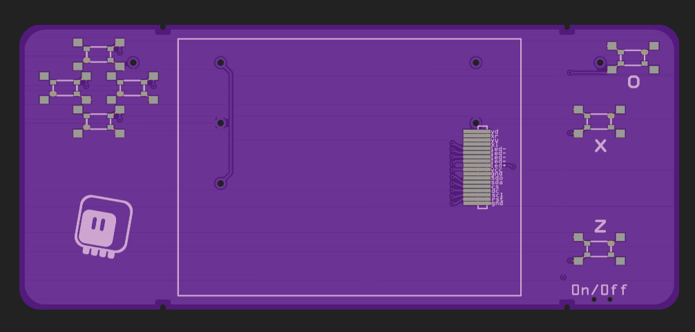
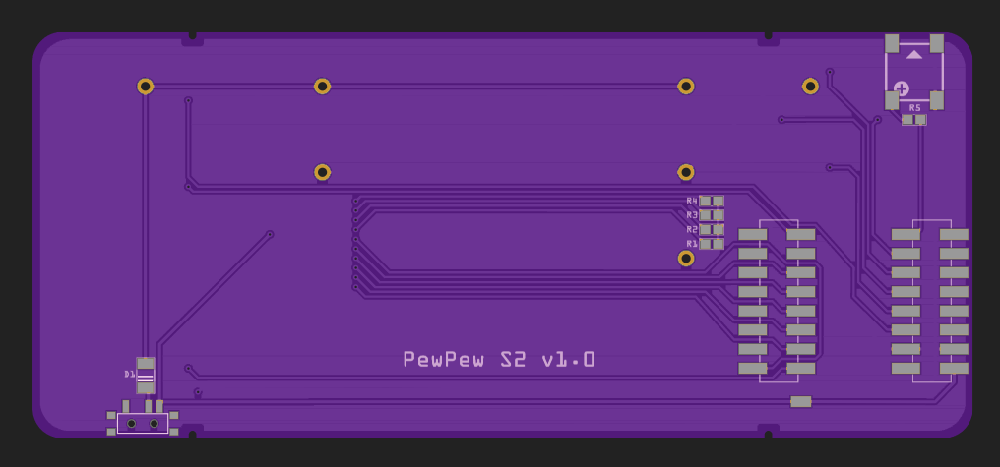

Restarting¶
Published on 2022-02-14 in µGame S3.
I put this project on hold last time, but somehow I couldn’t let go of the ideas, so now I’m back. As mentioned previously, the experiments with parallel display didn’t work very well, and I have given up on that — but that same display is also available with an SPI interface — named Z320IT010 — and with a faster SPI clock of the ESP32-S2, it might still work well enough. I would use my Stage, a Tile and Sprite Engine , which now has the option of scaling the display up, and not the slow displayio.
I also decided to take a step back from designing a “product” that can be assembled by a fab house, and instead make a prototype that can be easily made at home. This, among other things, means using a development board, which simplifies everything considerably.
Finally, I decided to try the portrait orientation. I went ahead and ordered the first PCB:


We will see how well that works.